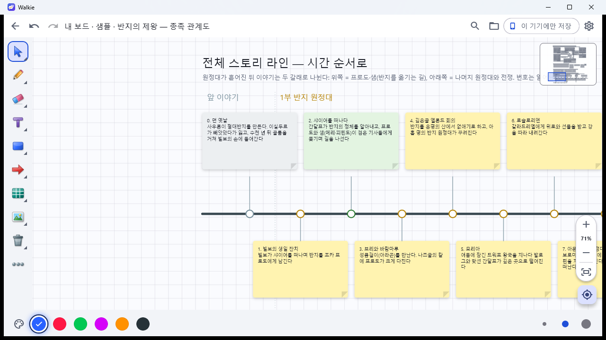
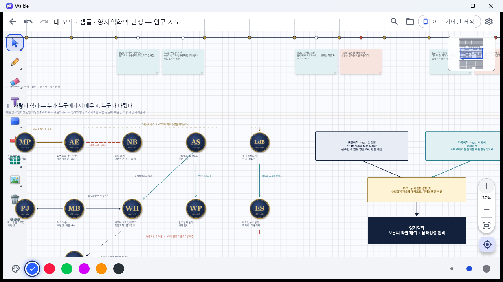
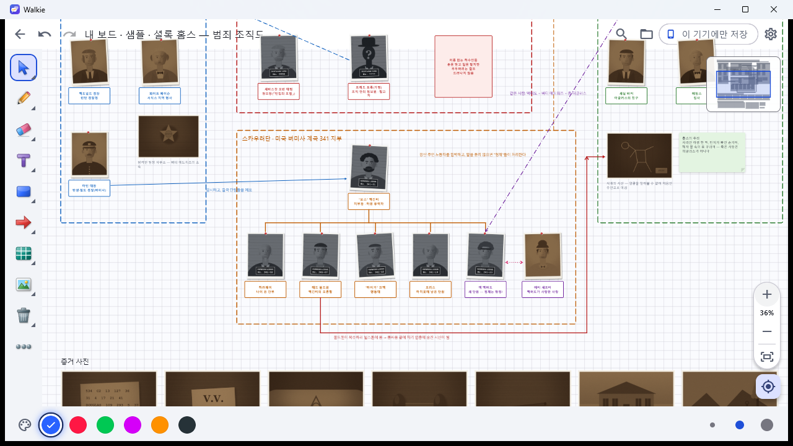
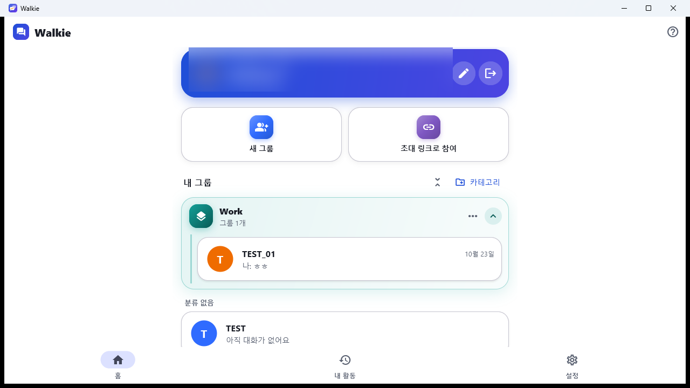

가로·세로 10m가 넘는 넓은 보드에 문서·PDF·사진·파일·도형·글을 올려 놓고, 같은 화면에서 그룹 통화와 채팅을 하는 아이데이션 앱. 엑셀·파워포인트와도 이어서 작업해요. 내용은 서버에 저장하지 않아요.
무료 베타2026년 말까지 모든 기능 무료PC + 안드로이드가상의 웹툰 「달빛 우체국」을 팀이 함께 기획하는 회의 — 그룹 만들기·초대, 통화하며 보드 고치기, 점 투표, 엑셀 표·그래프, 보드에서 바로 발표, PDF 저장까지. 화면은 실제 앱이고 팀원은 연출이에요.
English version: en.html
PDF 쪽 넘기기·내용 찾기, 사진·파일·동영상·유튜브, 펜·도형·연결선·포스트잇·표·마인드맵·그래프까지 한 판에.
보드를 떠나지 않고 버튼 하나로 그룹 통화, 같은 화면에서 채팅·답장·반응. 녹음은 방장이 허용한 방에서만, 표시와 함께 해요.
엑셀 범위를 붙이면 고칠 수 있는 표, 표를 바꾸면 그래프도 함께. 보드를 고칠 수 있는 파워포인트(.pptx)로 저장.
소설·웹툰 스토리라인 기획, 범죄 수사·사건 분석, 공동 연구, 사업 기획, 스터디·수업.
대화·보드·파일은 서버에 남지 않아요. 초대한 사람의 기기끼리 서명·암호화해 주고받아요.
판타지 종족 관계도, 셜록 홈스 조직도, 양자역학 연구 지도 같은 샘플과 회의록·브레인스토밍·회고·칸반·소설 플롯·사건 분석·린 캔버스·스터디 템플릿으로 바로 시작해요.
팀원의 마우스 위치가 보이고, 레이저(L)로 가리키면 모두에게 빛나는 자취가 남아요. 통화 중 이모지 반응·손 들기도.
모두에게 같은 타이머를 띄우고, 아이디어마다 점을 찍어 투표한 결과를 보드에 남겨요.
객체에 댓글을 달고 @닉네임으로 부르면 그 사람에게 알림이 가요. 채팅에 사진·파일도 보내요.
프레임으로 구역을 나눠 프레임마다 PDF·PPT로 저장하고, 배경은 잠그고, 지금 보드를 버전으로 남겨 나중에 복원해요.
사진과 PDF를 골라 순서대로 PDF 하나로 합치거나, PDF를 쪽마다 나누어 보드에 일렬로 놓아요.
2000행 × 50열 표와 엑셀 그래프를 그대로 넣고, 원본 엑셀과 연결하면 저장할 때마다 보드가 바뀌어요. 표는 엑셀에 칸으로 다시 붙여요.
통화를 예약하면 채팅에 남고 10분 전과 정각에 알려 줘요.
방향키·Page Up/Down·Home으로 보드 화면을 옮겨요.




설치 프로그램을 실행하면 관리자 권한 없이 설치돼요. 새 버전은 자동으로 업데이트돼요.
WalkieSetup.exe설치 없이 쓰기: 휴대용 압축(zip)
"Windows의 PC 보호" 창이 뜨면 추가 정보 → 실행을 눌러 주세요(코드 서명 전인 개인 개발 앱이라 뜨는 안내예요).
Microsoft Store에서도 받을 수 있어요 — 경고 창 없이 설치되고 업데이트는 스토어가 해 줘요: Walkie Board (Microsoft Store). 스토어판은 심사를 거쳐 조금 늦게 새 버전이 올라와요.
앱 마켓이 아닌 설치 파일(APK)로 제공해요. 폰 카메라로 QR을 찍어 받으세요.
설치할 때 "출처를 알 수 없는 앱 설치"를 허용해 주세요. 설치한 뒤에는 Wi-Fi에서 새 버전을 미리 받아 두었다가, 앱을 켤 때 "업데이트할까요?" 창으로 알려 줘요(설치는 직접 눌러요).
모든 판과 바뀐 내용: 릴리스 목록
각 릴리스의 SHA256SUMS.txt에 파일마다 SHA-256이 있고, 이 목록은 아래 공개키(Ed25519)로 서명되어 SHA256SUMS.txt.sig로 함께 올라가요. 같은 지문은 앱의 설정 › 도움말 · 정보 › 배포 파일 확인에도 있어요.
서명 공개키: 8470ef683f68386c1689af9a569e6152a41d43e34aaa8a109a09fc7a188f34c0
APK 서명 인증서 SHA-256: B3:76:F4:8D:F0:A7:F3:95:62:BF:AC:34:CC:B6:BF:94:AC:26:6B:D2:0D:A7:36:F4:34:C3:F5:5F:3E:6F:6C:79
Windows에서 해시 보기: PowerShell에서 Get-FileHash .\WalkieSetup.exe